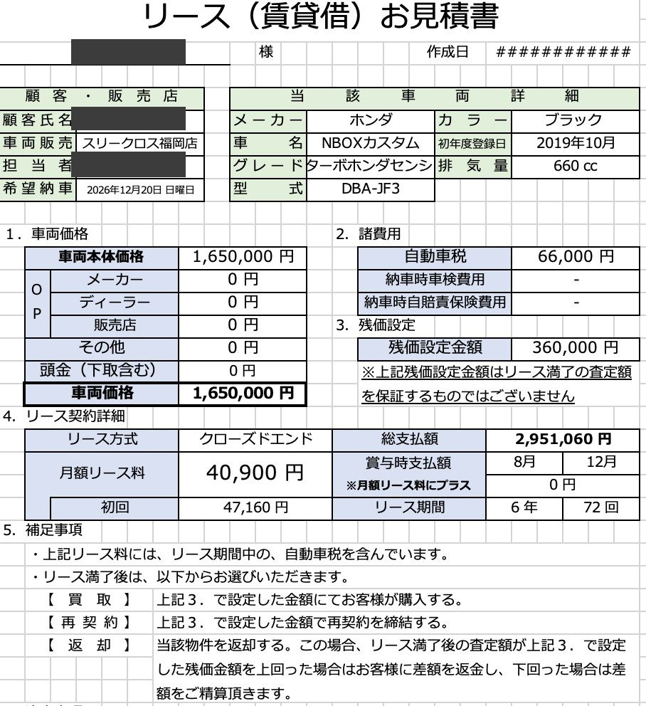
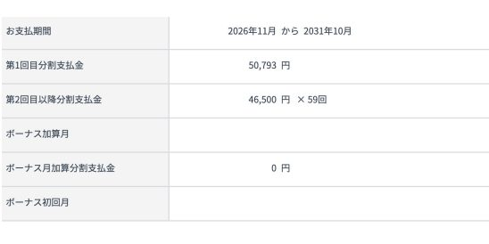
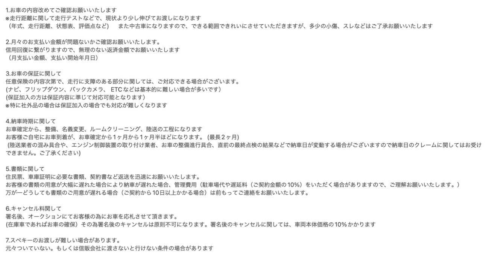

単元17
クロージング〜契約説明
この単元のゴール案
クロージングから契約説明までできる
含む内容：クロージング・本審査、契約とお客様への説明
この単元の詳しいマニュアルは作成予定です（サンプルは単元9・13・20）。
4-10クロージング・本審査
- 4-10-1
本審査に進む意思の確認
お写真ご確認いただきありがとうございます！〇〇様が気に入られたこちらの〇〇で、信販会社の方へ本審査を進めてよろしいでしょうか？
本審査の結果も含めて明日ご連絡させていただきたいのですが、何時ごろがご都合よろしいでしょうか？
- 4-10-2
最終確認：車両、総額・頭金・月額・回数・ボーナス払い、納車先・納期の目安、名義人、タイヤ・傷の扱いなど整備の決めごと、故障保証のプラン（プレミア＝カープレミア保証、基本プラチナ3年／リローン＝プロガード、基本加入／USS＝プロガード、粗利次第。黒ナンバーは保証に入れない）
- 4-10-3
渡部社長のポイント
キャンセル防止のトーク（2つをセットで話す）
- 物理的な話：
では、このお車を実際に買わせていただこうと思うんですが、ご存知の通り車にはクーリングオフがないんですよね。買った後に『やっぱりいらない』『違う車にしてほしい』と言われても、どうすることもできなくなってしまうので、この後に（確認の内容）を送りますので、簡単でいいので『了解』とか『これでいいです』とご返信ください。それ以降に車を変える場合は、キャンセル料や陸送費などがかかってしまうので、十分気をつけてください
- 手に入れたときのイメージ：
本当によかったです。まずこのお車に乗っていただいて、ぜひ信用回復していただいて、次もまた私から一番安い買い方でご案内したいです。今日車を落とせば年末までに納車が間に合いますので、ぜひ新しい車でいい年末年始を迎えてください
- 金額だけでなく「この車に乗る」ことに腹落ちしてもらえる
- 物理的な話：
- 4-10-4
本申込の手続き（eKYC・口座登録など）
- 期限は原則7営業日（契約の曜日で調整）
- 手続きのメールが届いていることをLINEで随時お知らせし、届いたらすぐ対応してもらう
- 日切りトーク渡部社長：
〇〇さん、すみません、1つだけ。今回本申込にあたって、やっていただかないといけないことがあるんですが、（これとこれとこれ）。これが終わらないと車の手続きが一切進まないので、その分納車がめちゃくちゃ遅くなるんです。全国でうちの営業だけでも何十人もいるので、1日遅れるだけで納車が1週間遅れたりするんです。よかったら〇日の〇時までに、一旦なんとか時間を作ってやっていただけないですか？私も1日でも早く納車したいので
- 「お願いします」だけだと「今日は忙しい」で終わる。「1日でも早くお乗りいただいて、早く信用回復につなげていただきたいんです」と押す
- ポイントは「比較法（1日遅れたらどうなるか）」と「日切り（何日の何時まで）」。お客様が早くできそうなら当日の夜でもよい
4-11契約とお客様への説明
- 4-11-1
説明の漏れは、そのまま納車チームへのクレームになる
- 4-11-2
お客様に必ず説明すること
- 契約後のキャンセルはできない（ICTは中途解約も原則不可）
- エンジン停止装置が付く。1日でも支払いが遅れると、支払うまで止まる（ICTはGPS）
- 納車までの目安：書類がそろってから約40日（急いでもらえれば25日の例もある）
- 用意していただく書類：リローンは印鑑証明書、それ以外は住民票（マイナンバーの記載なし）。車庫証明が要る地域は保管場所使用承諾証明書（賃貸・家族所有）か自認書（持ち家）と配置図。駐車場は自宅から直線2km以内
- 書類の提出期限を決めて記録する（返送は郵送から1週間が目安）
- 中古車の傷とタッチアップの限界、雨漏れなど納車後に出ることがある症状（6-2章）
- 4-11-3
信販会社ごとの契約の流れ（お客様がやること）
- リローン：①GMO顔認証eKYC（約2分、免許証などの暗証番号4桁×2が必要）②リローン公式LINE登録と口座登録（約5分）③スリークロスからの本人確認電話と、メールで届く電子契約書への署名（約5分、署名5か所）④公式LINEに印鑑証明書の写真を送る。初回は銀行振込、2回目から口座振替
- リローンは「スリークロス（050-5530-4464）から電話が来る。出られなければ折り返す」と必ず伝える。スリークロスでの契約であることも説明する
- 免許証の暗証番号が分からない方は、免許試験場か警察署で確認してもらう。何度も入れない
- プレミア：申込書のQRコードから引き落とし口座を登録する。モビリティアンサーホールディングスでの契約であることを説明する
- USS：「MCCS〜」「USS〜」の2種類の契約書に記入する
- ICT：申込金（リース料2か月分）を振り込む。初回引き落としは登録日の翌々月5日（1/10登録なら3/5）。登録月分＋翌月分を請求する点を先に伝える
- 4-11-4
注文書と電子署名

図4-Eリローン：リース見積書の例 
図4-F注文書の例 
図4-G月額が分かるもの（お支払い期間・回数） 
図4-H契約時の注意事項の例
教育担当者のチェック
押すと印が付きます。この端末のブラウザにだけ保存されます。正式な記録は印刷したチェックリストに書いてください。